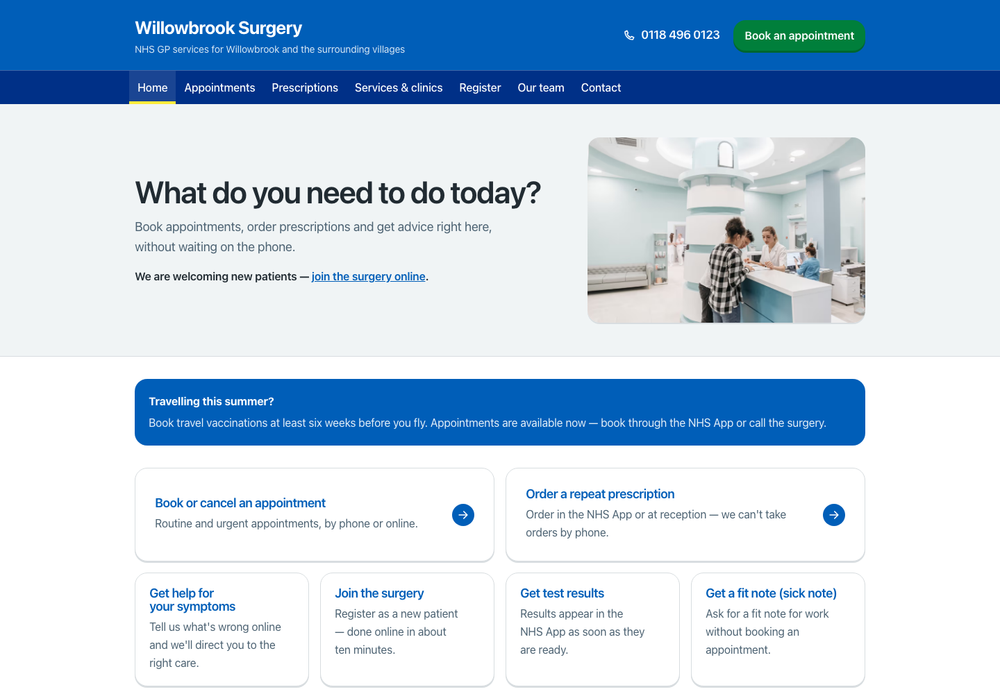

A practice website that works as hard as your reception team.
Patients arrive stressed, in a hurry and often on an old phone. Your website should get them to the right service in seconds, and quietly take routine requests off the phones.

Willowbrook Surgery is a fictional practice built and hosted by Flutterly so you can judge the standard for yourself. Click around it on any device, exactly as your patients would.
-
01
Signposting that comes first
Appointments, prescriptions, online consultations and the NHS App front and centre, so common journeys take one tap, not a hunt through menus.
-
02
Accessible to every patient
WCAG 2.2 AA designed in from the first wireframe, tested with keyboards and screen readers, and shipped with a published accessibility statement.
-
03
Self-serve that cuts calls
Registration, fit notes, test results and travel advice become guided answers online, so reception repeats them less often on the phone.